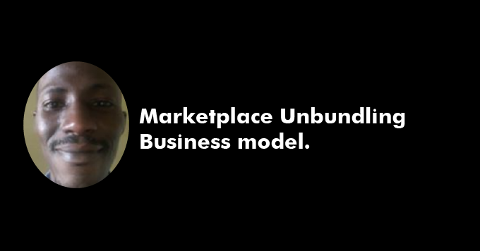
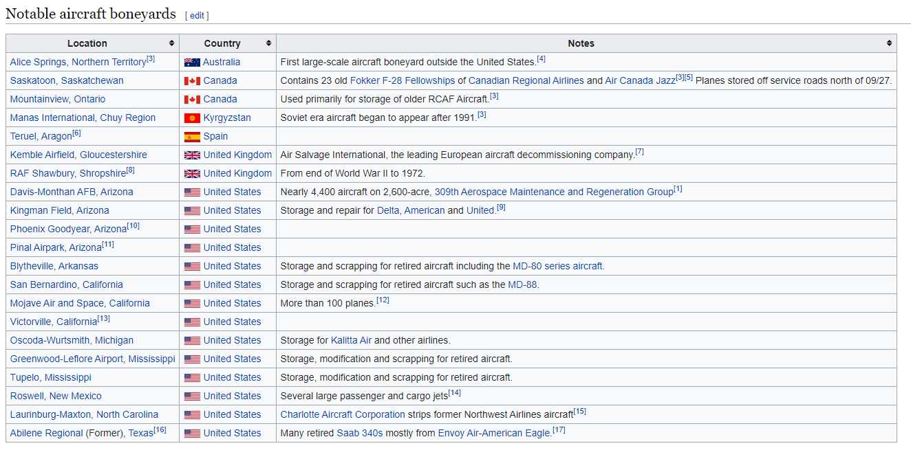

Jul 17, 2020
Marketplace Unbundling Business model.

In one of my last posts, I was highlighting the unbundling of craigslist which brought to life several successful startups like air b&n, Zillow, thumbtacks, Tinder, Nextdoor, and Reddit. Each of these startups took a vertical of craigslist on built a marketplace about this vertical. Now, this business creation pattern is being applied to these marketplaces. To say that the cycle restart with some entrepreneurs who are taking in turn verticals of marketplaces cited above. For example, Airbnb is being unbundled by startups like Sonder, Lyric, Domio, and Blueground. The model is to take a specific niche of Airbnb and build a specialized product for it. Sonder has become successful by doing this. This startup raised $210M and has a valuation of $1B. When a marketplace or even a platform reaches the top of its growth, it becomes crowded which gives other entrepreneurs an opportunity to build a more curated product targeting a niche of these marketplaces or platforms. Curation is an approach for building a marketplace business model but you also can create an original experience that emulates the business model of a successful marketplace. This experience Emulation is what Hipcamp and Glamping Hub have exploited. These two startups have emulated Airbnb by offering outdoor camping rental with properties ranging from tents, teepees, or original products like refurbished airplanes. Recall, four years ago, I drafted a project for converting airplanes graveyard into touristic place with the airplanes refurbished for hosting the tourist. I think it is still a very good business model for who has the budget to implement this.

If you want to build a marketplace, know that there are opportunities for unbundling successful actual marketplaces by building product or services using one of there verticals (Niche) or designing a new experience which emulates the behavior of the marketplace you want to unbundle.